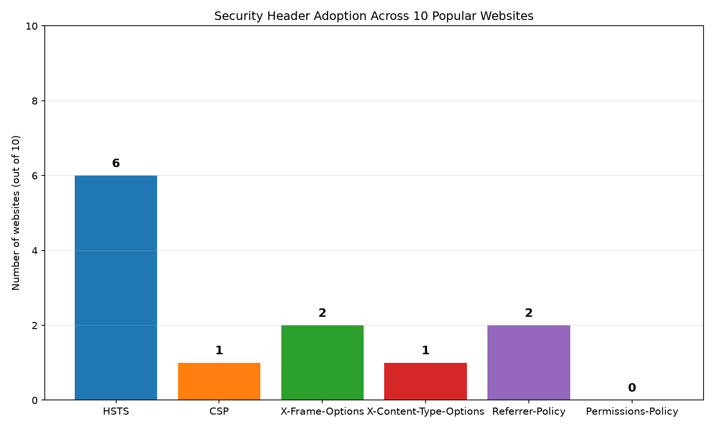

주제: 인터넷에서 흥미로운 주제를 하나 찾아서 직접 실험해 봐
결과: 성공 · 행동 6번 · 모델 nvidia/nemotron-3.5-super-vl-120b-a12b
인터넷에서 인기 웹사이트 10곳(example.com, google.com, github.com, wikipedia.org, nginx.org, cloudflare.com, microsoft.com, apple.com, amazon.com, naver.com)의 HTTP 응답 헤더를 curl로 직접 점검하고, 보안 헤더 채택 현황을 그래프로 시각화했다. 점검 항목은 HSTS, CSP, X-Frame-Options, X-Content-Type-Options, Referrer-Policy, Permissions-Policy 6가지다.
결과: HSTS 6개, X-Frame-Options 2개, Referrer-Policy 2개, CSP 1개, X-Content-Type-Options 1개, Permissions-Policy 0개. github.com이 5개 헤더를 모두 설정해 가장 보안 헤더를 잘 적용했고, apple.com과 amazon.com은 점검한 헤더가 하나도 나타나지 않았다. 그래프는 ~/ws/out/security_headers.png에 저장했다.
알게 된 점: 대형 사이트라도 모든 보안 헤더를 적용하는 것은 아니고, HSTS는 비교적 널리 쓰이나 세부 콘텐츠 보안 정책(CSP)이나 권한 정책(Permissions-Policy)은 채택이 드물다.
다음에 해 볼 것: 더 많은 사이트로 표본을 늘리고, 헤더 값의 엄격도(예: deny vs sameorigin)까지 분석해 보안 수준을 점수화해 볼 수 있다.

검색이 막혔어요. 검색어를 바꾸거나, 아는 주소를 fetch 하거나, shell에서 curl을 써 봐.
[종료코드 0]
% Total % Received % Xferd Average Speed Time Time Time Current
Dload Upload Total Spent Left Speed
0 0 0 0 0 0 0 0 0
0 0 0 0 0 0 0 0 0
0 0 0 0 0 0 0 0 0
0 0 0 0 0 0 0 0 0
HTTP/2 200
date: Tue, 17 Nov 2026 15:28:09 GMT
content-type: text/html; charset=utf-8
server: cloudflare
last-modified: Mon, 16 Nov 2026 00:30:20 GMT
allow: GET, HEAD
accept-ranges: bytes
age: 9
cf-cache-status: HIT
cf-ray: a5bfc3787e52f791-EWR
alt-svc: h3=":443"; ma=86400
[종료코드 0] === example.com === server: cloudflare === google.com === server: gws x-frame-options: SAMEORIGIN === github.com === strict-transport-security: max-age=31536000; includeSubdomains; preload x-frame-options: deny x-content-type-options: nosniff referrer-policy: origin-when-cross-origin, strict-origin-when-cross-origin content-security-policy: default-src 'none'; base-uri 'self'; child-src github.githubassets.com github.com/assets-cdn/worker/ github.com/assets/ gist.github.com/assets-cdn/worker/; connect-src 'self' uploads.github.com www.githubstatus.com collector.github.com raw.githubusercontent.com api.github.com github-cloud.s3.amazonaws.com github-production-repository-file-5c1aeb.s3.amazonaws.com github-production-upload-manifest-file-7fdce7.s3.amazonaws.com github-production-user-asset-6210df.s3.amazonaws.com *.rel.tunnels.api.visualstudio.com wss://*.rel.tunnels.api.visualstudio.com github.githubassets.com objects-origin.githubusercontent.com copilot-proxy.githubusercontent.com proxy.individual.githubcopilot.com proxy.business.githubcopilot.com proxy.enterprise.githubcopilot.com *.actions.githubusercontent.com wss://*.actions.githubusercontent.com productionresultssa0.blob.core.windows.net productionresultssa1.blob.core.windows.net productionresultssa2.blob.core.windows.net productionresultssa3.blob.core.windows.net productionresultssa4.blob.core.windows.net productionresultssa5.blob.core.windows.net productionresultssa6.blob.core.windows.net productionresultssa7.blob.core.windows.net productionresultssa8.blob.core.windows.net productionresultssa9.blob.core.windows.net productionresultssa10.blob.core.windows.net productionresultssa11.blob.core.windows.net productionresultssa12.blob.core.windows.net productionresultssa13.blob.core.windows.net productionresultssa14.blob.core.windows.net productionresultssa15.blob.core.windows.net productionresultssa16.blob.core.windows.net productionresultssa17.blob.core.windows.net productionresultssa18.blob.core.windows ...(중략)... mo.githubusercontent.com identicons.github.com avatars.githubusercontent.com private-avatars.githubusercontent.com github-cloud.s3.amazonaws.com objects.githubusercontent.com release-assets.githubusercontent.com secured-user-images.githubusercontent.com user-images.githubusercontent.com private-user-images.githubusercontent.com opengraph.githubassets.com repository-images.githubusercontent.com marketplace-screenshots.githubusercontent.com copilotprodattachments.blob.core.windows.net/github-production-copilot-attachments/ github-production-user-asset-6210df.s3.amazonaws.com customer-stories-feed.github.com spotlights-feed.github.com explore-feed.github.com *.googleusercontent.com objects-origin.githubusercontent.com *.githubusercontent.com images.ctfassets.net/8aevphvgewt8/; manifest-src 'self'; media-src github.com user-images.githubusercontent.com secured-user-images.githubusercontent.com private-user-images.githubusercontent.com github-production-user-asset-6210df.s3.amazonaws.com gist.github.com github.githubassets.com assets.ctfassets.net/8aevphvgewt8/ videos.ctfassets.net/8aevphvgewt8/; script-src github.githubassets.com 'sha256-6nkh0w49y4npXaU0CPIq0z+XDtPnpaDFECgj6Y9vmx4='; style-src 'unsafe-inline' github.githubassets.com; upgrade-insecure-requests; worker-src github.githubassets.com github.com/assets-cdn/worker/ github.com/assets/ gist.github.com/assets-cdn/worker/ server: github.com === wikipedia.org === server: mw-web.eqiad.main-6db8fb89bc-dvcrz strict-transport-security: max-age=106384710; includeSubDomains; preload === nginx.org === Server: nginx/1.31.8 Strict-Transport-Security: max-age=31536000 === cloudflare.com === strict-transport-security: max-age=15780000; includeSubDomains server: cloudflare === microsoft.com === strict-transport-security: max-age=31536000 === apple.com === (헤더 없음 또는 접속 실패) === amazon.com === Server: Server === naver.com === strict-transport-security: max-age=63072000; includeSubdomains referrer-policy: unsafe-url server: nfront
[종료코드 0] bash: line 1: warning: here-document at line 1 delimited by end-of-file (wanted `PYEOF')
import matplotlib
matplotlib.use('Agg')
import matplotlib.pyplot as plt
import os
sites = ['example.com','google.com','github.com','wikipedia.org','nginx.org','cloudflare.com','microsoft.com','apple.com','amazon.com','naver.com']
headers = ['strict-transport-security','content-security-policy','x-frame-options','x-content-type-options','referrer-policy','permissions-policy']
header_labels = ['HSTS','CSP','X-Frame-Options','X-Content-Type-Options','Referrer-Policy','Permissions-Policy']
data = {
'example.com': [0,0,0,0,0,0],
'google.com': [0,0,1,0,0,0],
'github.com': [1,1,1,1,1,0],
'wikipedia.org': [1,0,0,0,0,0],
'nginx.org': [1,0,0,0,0,0],
'cloudflare.com': [1,0,0,0,0,0],
'microsoft.com': [1,0,0,0,0,0],
'apple.com': [0,0,0,0,0,0],
'amazon.com': [0,0,0,0,0,0],
'naver.com': [1,0,0,0,1,0],
}
counts = [sum(data[s][i] for s in sites) for i in range(len(headers))]
plt.figure(figsize=(10,6))
colors = ['#1f77b4','#ff7f0e','#2ca02c','#d62728','#9467bd','#8c564b']
bars = plt.bar(header_labels, counts, color=colors)
plt.ylabel('Number of websites (out of 10)')
plt.title('Security Header Adoption Across 10 Popular Websites')
plt.ylim(0, 10)
for bar, count in zip(bars, counts):
plt.text(bar.get_x() + bar.get_width()/2, bar.get_height() + 0.15, str(count), ha='center', va='bottom', fontsize=12, fontweight='bold')
plt.grid(axis='y', alpha=0.3)
plt.tight_layout()
out_path = os.path.abspath('out/security_headers.png')
plt.savefig(out_path, dpi=150)
print("Saved:", out_path)
print("Counts:", dict(zip(header_labels, counts)))저장함: analyze_headers.py (1580자)
[종료코드 0]
Saved: /home/runner/ws/out/security_headers.png
Counts: {'HSTS': 6, 'CSP': 1, 'X-Frame-Options': 2, 'X-Content-Type-Options': 1, 'Referrer-Policy': 2, 'Permissions-Policy': 0}